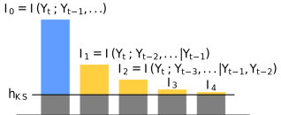

-

Entrograms and coarse graining of dynamics on complex networks
Faccin, Schaub, Delvenne, Journal of Complex Networks ArXiv -

Community Detection in Quantum Complex Networks
Faccin, Migdał, Johnson, Bergholm, Biamonte, Phys. Rev. X 4, 041012 (2014) ArXiv -

QuEBApp
A python module to find communities in complex quantum systems